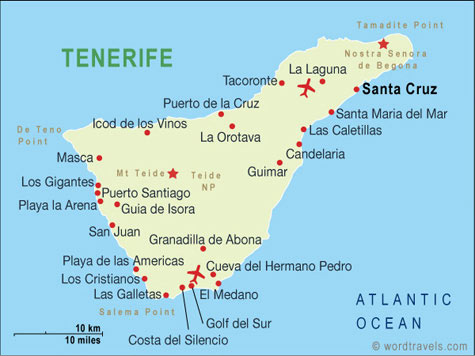

Tūrisms
Tūrisma iespējas Tenerifē ir neierobežotas. Pirmkārt, šajā salā sastopami dažādi dabas brīnumi. Tenerifes centrā atrodas Teides nacionālais parks ar tāda paša nosaukuma vulkānu, bet Los Gigantes kūrorta piekrastē redzamas “elles sienas” - virs okeāna nokārušās klintis. Šeit ir arī eikaliptu meži, Teno rags, uz kuru ved bīstams, bet neticami gleznains ceļš, botāniskie dārzi un pludmales, kas klātas melnām vulkāniskām smiltīm.
Sala ir interesanta ar savu vēsturi, ar kuru iepazīties palīdzēs brauciens pa Guimar piramīdām (Pirámides de Güímar), vai Maska pirātu ciemu, kas atrodas dziļā aizā, bruņinieku turnīra apmeklējums San Migel pilī, kā arī ekskursijas pa senajām La Laguna, Kandelārijas, Garačiko, La Orotava pilsētām un salas galvaspilsētu Santa Cruz De Tenerife.
Un, visbeidzot, Tenerife Spānijā – tie ir jaunie iespaidi un izklaides katru dienu. Sērfings, golfs, iepirkšanās un naktsklubi, Loro parks (zooparks, botāniskais dārzs, okeanārijs un delfinārijs vienuviet). “Ērgļu parks”, akvaparks “Siam park” Kosta Adehā, karnevāls, spa procedūras- tas ir vien neliels piemērs tam kā organizēt savu atpūtu.
Apskati AirBaltic piedāvātās TOP-10 vietas Tenerifē! Spied Šeit!